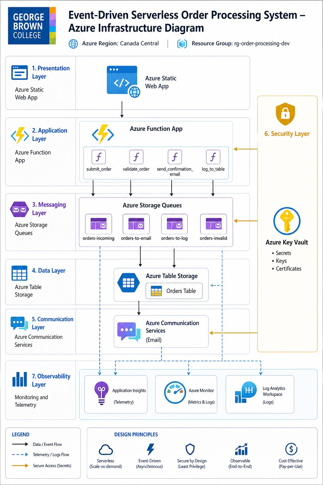
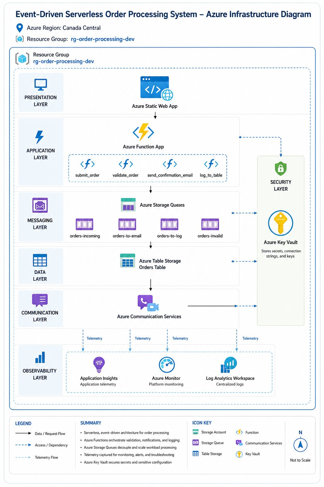

📋 Project Summary
This project implements an event-driven, serverless order processing system on Microsoft Azure. The system simulates a real-world e-commerce scenario: a customer submits a laptop order through a web frontend, receives an immediate confirmation response, and the backend asynchronously validates the order, sends a confirmation email, and logs the order to a database — all without a continuously running server.
The architecture demonstrates core cloud-native principles including serverless compute, asynchronous message-driven processing, decoupled services, scalability, and end-to-end observability.
📊 Project Status
Current phase: Phase 6 complete — secrets migrated to Key Vault via Managed Identity, Phase 7 monitoring next. The live pipeline now accepts orders, validates queue messages, fans out valid orders, writes to Azure Table Storage, and sends confirmation email through Azure Communication Services.
submit_order, validate_order, log_to_table, and send_confirmation_email deployed and verified live
📍 Track Real-Time Project Progress
This page documents the approved architecture and overall project structure. For live, week-by-week tracking of phase status, provisioned resources, blockers, and next steps, see the project roadmap — updated as work is completed.
View Project Roadmap →👥 Team Information
| Name | Role |
|---|---|
| Hikmatullah Shinwari | Team Lead |
| Md Rahat Islam Anik | Repository Owner / Team Member |
| Yatish Yashwant Vispute | Team Member |
| Devansh Mehulkumar Bhatt | Team Member |
| Ashdeep Singh Grewal | Team Member |
| Puneet Singh | Team Member |
🎓 Professor Feedback Summary
Reviewer: Professor Ali Ziyaei
The initial review of the logical flow and data path was positive — the professor confirmed the team is on the right track and that the overall data flow makes sense.
Following submission of the infrastructure diagram, the latest feedback was:
Interpretation: The architecture and design are accepted overall. The requested improvement is about visual clarity and resource visibility — specifically ensuring Azure Key Vault and all mentioned services are easy to locate in the infrastructure diagram.
✅ Addressed in the updated Infrastructure Diagram below — Key Vault is now shown in a dedicated, clearly labeled Security Layer🔄 Logical Flow Diagram
The logical flow diagram illustrates how an order moves through the system from submission to completion — covering the request path, the validation and fan-out step, and the two parallel processing branches (email confirmation and database logging).
architecture/logical-flow-diagram.png(Approved by Professor Ali in initial review)
Approved Flow
Customer → Azure Static Web App → submit_order Function →
orders-incoming Queue → validate_order Function
Valid order: → orders-to-email Queue → send_confirmation_email
Function → Azure Communication Services Email
| → orders-to-log Queue → log_to_table Function → Azure Table Storage
Invalid order: → orders-invalid Queue
Monitoring: All functions emit logs, traces, and telemetry to Application Insights, Azure Monitor, and Log Analytics Workspace.
🏗️ Architecture Diagram
The architecture diagram below presents the seven functional layers of the system — presentation, application, messaging, data, communication, security, and observability — showing how each Azure service fits into the overall design.

Figure 1 — Layered architecture view showing the Presentation, Application, Messaging, Data, Communication, Security, and Observability layers, with Azure Key Vault highlighted as part of a dedicated Security Layer.
☁️ Infrastructure Diagram
The infrastructure diagram shows the actual Azure resources to be deployed, their placement within the resource group and region, and the relationships between them. This diagram directly addresses Professor Ali's feedback by clearly surfacing every resource — including Azure Key Vault — within the deployment boundary.

Figure 2 — Infrastructure diagram showing the
rg-order-processing-dev resource group in the East US region,
with all Azure resources, the Security Layer (Azure Key Vault), and the Observability Layer
explicitly placed and labeled.
Infrastructure Includes
- Azure Region: East US
- Resource Group:
rg-order-processing-dev - Virtual Network (network boundary)
- Azure Static Web App (Presentation Layer)
- Azure Function App with four functions (Application Layer)
- Azure Storage Account with four Storage Queues (Messaging Layer)
- Azure Table Storage — Orders Table (Data Layer)
- Azure Communication Services — Email (Communication Layer)
- Azure Key Vault (Security Layer)
- Application Insights, Azure Monitor, Log Analytics Workspace (Observability Layer)
📦 Azure Resource Inventory
| Resource Type | Planned Name | Purpose |
|---|---|---|
| Resource Group | rg-order-processing-dev | Container for all Azure resources |
| Region | East US | Primary deployment region |
| Virtual Network | vnet-order-processing-dev | Network boundary |
| Static Web App | st-order-store-dev | Customer order frontend |
| Function App | func-order-processing-dev | Serverless backend functions |
| Storage Account | storderstoragedev | Hosts queues and table storage |
| Queue | orders-incoming | Holds incoming order messages |
| Queue | orders-to-email | Holds email work items |
| Queue | orders-to-log | Holds logging work items |
| Queue | orders-invalid | Holds invalid or rejected orders |
| Table Storage | Orders | Stores order records |
| Communication Services | acs-order-email-dev | Sends confirmation emails |
| Key Vault | kv-orderproc-rahat | Stores secrets and configuration (planned name kv-order-processing-dev was globally taken) |
| Application Insights | appi-order-processing-dev | Captures app telemetry |
| Azure Monitor | Azure Monitor | Metrics, alerts, dashboards |
| Log Analytics Workspace | law-order-processing-dev | Centralized logs and diagnostics |
💡 Key Design Decisions
The project uses an event-driven serverless architecture to demonstrate asynchronous cloud processing, decoupled services, scalability, and observability, while keeping the system cost-effective and simple to operate.
Why this approach
The customer's web frontend receives a fast response immediately after order submission, while all backend processing — validation, email confirmation, and database logging — happens asynchronously through Azure Storage Queues and serverless Azure Functions. This decouples each step so that a failure or delay in one component (e.g. email delivery) does not affect the others (e.g. order logging).
Scope discipline
The project intentionally uses only the Azure services required to demonstrate these principles: Azure Static Web Apps, Azure Functions, Azure Storage Account (Queues & Table Storage), Azure Communication Services Email, Azure Key Vault, Application Insights, Azure Monitor, Log Analytics Workspace, Virtual Network, and a single Resource Group in East US. Additional enterprise services (such as AKS, API Management, Service Bus, Front Door, Sentinel, or Defender for Cloud) are deliberately excluded to avoid over-engineering, and may be noted separately as future enhancements if time allows.
🗺️ Implementation Roadmap
Phase 1 — Planning and Architecture
- GitHub repository setup
- Team documentation
- Logical flow diagram
- Infrastructure diagram
- Professor feedback review
Phase 2 — Azure Resource Deployment
- ✅ Resource group
- ✅ Storage account
- ✅ Storage queues
- ✅ Table storage
- ✅ Function App
- ✅ Application Insights
- ✅ Key Vault
- ✅ Communication Services
Phase 3 — Application Development
- ✅ Frontend order form connected to the live endpoint
- ✅
submit_orderfunction — HTTP trigger, anonymous POST endpoint, queue write verified - ✅
validate_orderfunction — queue trigger, validation, invalid-order routing, and fan-out verified - ✅
send_confirmation_emailfunction — queue trigger and Azure Communication Services email delivery verified - ✅
log_to_tablefunction — queue trigger and Azure Table Storage write verified
Phase 4 — Integration and Testing
- ✅ End-to-end order submission
- ✅ Queue validation and fan-out
- ✅ Email confirmation through ACS
- ✅ Table logging to the
Orderstable - ✅ Queue trigger message decoding issue resolved with
messageEncoding: none
Phase 5 — Evidence and Final Delivery
- Phase 1 and early Phase 2 screenshots collected in the evidence folder on
rahat-dev - ✅ Phase 3, Phase 4, and Phase 5 runtime evidence collected
- ✅ Deployment logs and live function output captured
- ✅ GitHub commits prepared on
rahat-dev - ✅ Function documentation updated for the combined deployment package
- Final presentation remains separate from this architecture page
🔧 GitHub Project Workflow
The team follows a professional GitHub workflow to track progress and produce evidence for final evaluation.
Open Issues
submit_order Azure Functionvalidate_order Queue Trigger